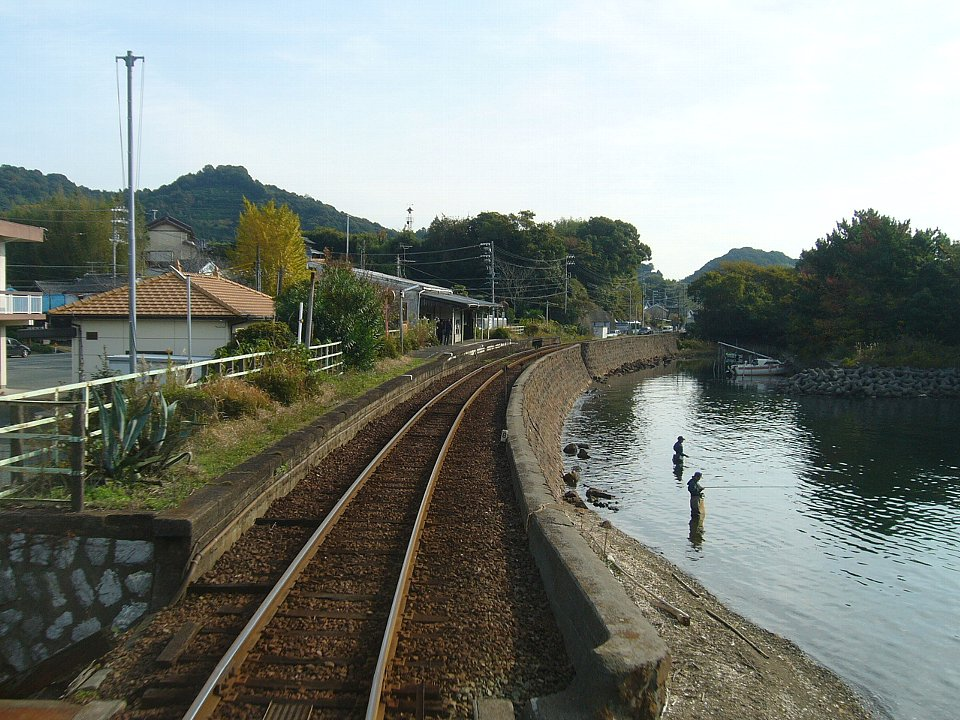

Un po’ di tempo da soli in campeggio o un pasto condiviso con un’amica: Laid-Back Camp trova il piacere nei piccoli momenti di un viaggio. Intorno al lago Hamana puoi trasformare i ricordi dei viaggi di Rin in una deviazione tutta tua.
01
Il viaggio di Rin intorno al lago Hamana
Tratta dal manga di Afro, Laid-Back Camp segue Rin Shima, a cui piace campeggiare da sola, e Nadeshiko Kagamihara, che sta scoprendo le gioie del campeggio. La loro vita quotidiana si svolge tra i paesaggi delle prefetture giapponesi di Yamanashi e Shizuoka.
Nella stagione 2 Rin visita il lago Hamana. Una veduta serale a Bentenjima, un incontro a Sakume e una sosta per acquisti a Kanzanji diventano tappe del viaggio intorno al lago. Sono questi i tre luoghi che esploreremo.
Guarda il trailer ufficiale della stagione 2
Apri su YouTube il trailer giapponese del canale ufficiale.


02
Tre luoghi intorno a un lago
Lo Shinkansen attraversa la parte meridionale del lago Hamana. Sakume, dove Rin incontra Nadeshiko, si trova sulla riva settentrionale, mentre Kanzanji è a est. Collocare i tre luoghi sulla mappa chiarisce la differenza: ciascuno offre una vista propria del lago e richiede un tragitto diverso.

Mappa: © OpenStreetMap contributors. Luoghi ed etichette aggiunti.
03
Fermati fino a sera a Bentenjima
Il parco costiero di Bentenjima è il luogo in cui Rin guarda il sole calare accanto alla torre rossa a forma di torii. È un’occasione per tornare al lago intravisto dallo Shinkansen, questa volta al passo di una passeggiata.
Dalla stazione Hamamatsu, prendi la JR Tokaido Main Line fino a Bentenjima. Cammina lungo la riva e lascia al cielo e all’acqua il tempo di cambiare colore. Se vuoi ritrovare l’atmosfera dell’anime, riserva una parte della giornata al semplice piacere di essere qui.
Il punto in cui tramonta il sole rispetto al portale cambia con le stagioni. Che tu cerchi una vista simile a quella di Rin o soltanto una serata sull’acqua, calcola il tempo necessario per arrivare prima del tramonto.
04
Una stazione accanto all’acqua a Sakume



Rin e Nadeshiko si incontrano alla stazione Hamanako-Sakume nell’episodio 3 della stagione 2. Unagi Sakume, il ristorante davanti alla stazione, è legato alla scena in cui gustano unaju, anguilla alla griglia su riso servita in un contenitore rettangolare. Una vista e un pasto: qui il viaggio delle protagoniste diventa facilmente una deviazione reale.
Per raggiungere la stazione dallo Shinkansen, prendi la JR Tokaido Main Line da Toyohashi o Hamamatsu fino a Shinjohara, poi cambia sulla ferrovia Tenryu Hamanako, detta anche linea Tenhama, verso la sponda settentrionale. Anche partendo da Bentenjima occorre prendere un treno JR per Shinjohara e cambiare lì. Non è quindi un collegamento ferroviario diretto lungo la riva da un luogo dell’anime all’altro.
A Sakume, goditi la vicinanza dell’acqua ai binari. La fotografia è del 2006: consulta le informazioni della ferrovia e del ristorante per conoscere strutture e modalità di apertura attuali. Controlla anche l’orario di ritorno prima di fermarti con calma.
Guida ufficiale e orari della stazione Hamanako-Sakume (giapponese) →
05
Una sosta per i dolci a Kanzanji
A Kanzanji Onsen, il quartiere termale sulla riva orientale del lago, Rin passeggia e compra dolci giapponesi. La guida di JR Central indica il vero negozio Wagashidokoro Shizuka come corrispondente a quello dell’anime. La grafia giapponese del nome cambia leggermente nel racconto, mentre l’atmosfera del luogo rimane.
Gli stessi dolci mostrati nell’anime potrebbero non essere sempre disponibili. Se gli acquisti sono il motivo della visita, controlla prima i giorni di apertura e l’assortimento del negozio.
Puoi raggiungere Kanzanji con un autobus locale dalla stazione Hamamatsu. È una destinazione distinta, dall’altra parte del lago rispetto a Sakume. Una giornata in ferrovia può concentrarsi su Sakume; una gita da Hamamatsu alla zona termale su Kanzanji. Considerarle uscite separate rende più semplice organizzare gli spostamenti.
06
Scegli la tua giornata
Fonti e crediti fotografici
JR Central: guida Locatrip a Hamamatsu e al lago Hamana (giapponese)
Progetto Laid-Back Camp di Shizuoka: luoghi della regione occidentale (giapponese)
Ferrovia Tenryu Hamanako: stazione Hamanako-Sakume (giapponese)
Associazione turistica di Kanzanji Onsen: informazioni di accesso (giapponese)
Yen Press: Laid-Back Camp, vol. 1, di Afro (inglese)
Fonti turistiche giapponesi verificate il 3 novembre 2026. Titolo inglese del manga e attribuzione all’autore verificati con Yen Press il 5 novembre 2026. Questo è un articolo di viaggio indipendente. La miniatura del trailer ufficiale rimanda al video originale su YouTube. Le altre immagini sono fotografie e una mappa, con i crediti riportati sopra.